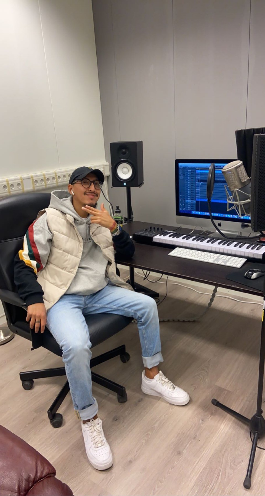

MUSIK / MUSICA / MUSIC / MUSIQUE
HEM
HEMSIDOR
DAWS
SOUNDCLOUD
KONTAKTA MIG
Musik är en magisk resa genom ljud som talar direkt till själen och väcker känslor vi kanske inte ens visste att vi hade. Om det är en kraftfull symfoni, en medryckande poplåt eller lugnande naturtoner, har musiken en unik förmåga att förändra stämningen och väcka minnen från olika delar av livet. Den förbinder oss på ett djupare plan, överskrider språk och kultur, och skapar en gemensam grund där människor möts utan att behöva säga ett ord. Med varje ton, varje rytm, skapas en konstform som kan lugna oss, få oss att reflektera eller inspirera oss till handling. Musik har en nästan mystisk förmåga att transportera oss till andra platser och tider, där vi kan uppleva gamla minnen eller skapa nya. Den kan föra oss närmare varandra, oavsett var vi kommer ifrån, och ge oss en känsla av samhörighet i ett delat ögonblick. Varje gång vi lyssnar är det som om en ny värld öppnas, en värld där vi kan utforska våra innersta tankar och känslor. Musik är på så sätt inte bara en konstform – det är en kraft som förenar, inspirerar och berör oss på djupet.
Musik är inte bara något vi hör – det är något vi känner.

Mitt namn är Pedro och det här är min historia
Jag började producera musik när jag var 15 år gammal, mest som ett roligt tidsfördriv under mina lediga stunder från skolan. Till en början var det bara en hobby, något jag gjorde för skojs skull, men ju mer tid jag lade på det, desto mer insåg jag hur mycket jag verkligen älskade det. Musikproduktionen blev snart ett sätt för mig att inte bara uttrycka mig kreativt, utan också att utforska den teknologiska världen och förstå hur digitala verktyg kunde användas för att skapa något helt unikt. Programmet jag började använda för att skapa min musik var FL Studio, och det visade sig snabbt vara det perfekta verktyget för någon som mig – en nybörjare utan förkunskap inom musikteori eller ljudteknik. Det som gör musikproduktion så fascinerande är att det är så tillgängligt; du behöver inte vara expert eller ha en djup förståelse av musik för att komma igång. Det handlar om att experimentera och låta din kreativitet flöda. När du väl börjar producera musik blir det nästan hypnotiserande – du kan förlora dig i processen och tiden flyger förbi. Och det bästa med musikproduktion är friheten du får. Du kan skapa precis vad du vill, utan några begränsningar. Du kan välja att fördjupa dig och utvecklas till en professionell musikproducent, eller så kan du hålla det som en avslappnad hobby vid sidan av. Det finns inga regler, bara möjligheter, och valet ligger helt i dina egna händer. Den här världen av kreativt skapande har öppnat så många dörrar för mig och gjort det möjligt att både ha roligt och utvecklas på samma gång.
Utöver min passion för musikproduktion är jag även en aktiv DJ med erfarenhet från en rad välkända klubbar, däribland Ställe, Sommargården, Wknd, Umgänget, Copacabana och Södra Teatern. Under åren har jag utvecklat min stil och spelat på många olika typer av evenemang. Något som verkligen ligger mig varmt om hjärtat är privata tillställningar, som födelsedagsfester och bröllop. Jag har haft äran att delta i många speciella stunder och skapa minnesvärda musikupplevelser för gästerna. Det är något magiskt med att få vara en del av dessa personliga och betydelsefulla tillfällen, och det är där jag känner att min musik verkligen kommer till sin rätt.
KlubbSpelning
KlubbSpelning